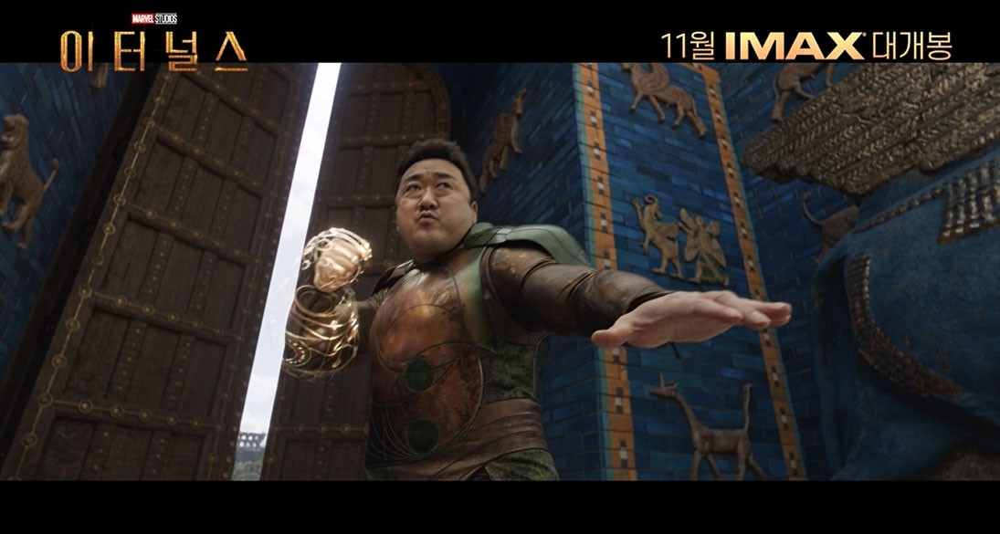

데비안츠라는 괴물들로부터 인류를 지키고 인류를 진화시키기 위해 신과 같은 존재인 셀레스티얼 아리솀은 이터널스를 지구로 보낸다. 이터널스는 기원전 5000년경 지구에 도착하여 인간을 도우며 살아가게 된다. 현재, 10명의 이터널스는 임무를 중단하고 인간 사회 곳곳에서 정체를 숨기고 살아가게 되었다. 어느 날, 5세기 전에 절멸된 것으로 여겨졌던 데비안츠가 다시 나타났고 이터널 세르시는 스프라이트와 이카리스와 함께 다른 이터널들을 다시 규합하려 노력한다. 세르시는 프라임 이터널인 에이잭을 찾아가지만, 그녀는 이미 죽어 있었고 곧 세르시가 새로운 프라임 이터널이 되어 아리솀과 교신할 수 있게 된다. 발리우드 배우로 살던 킨고, 매드 위리(Mahd Wy’ry) 증상으로 피아식별을 하지 못해 동료들을 공격하는 테나와 그녀와 함께 있는 길가메시를 만나게 된다. 길가메시와 테나를 만나고 나서, 세르시는 아리솀의 계획의 진실을 알게 된다. 지구에 심어진 셀레스티얼의 근원인 씨앗이 행성 표면에 지적 생명체들이 일정량 이상 있을 때 행성을 파괴하며 셀레스티얼이 탄생하는 것이 '이머전스'이고 이터널은 이를 위해 만든 안드로이드이며, 데비안츠는 통제에서 벗어난 이터널의 선배들이라는 사실이 밝혀진다. 진실을 알게 된 세르시는 다른 이터널들과 함께 이머전스를 막으려고 한다. 아마존 밀림에 숨어 지내던 또 다른 이터널 드루이그를 만나러 갔지만, 그는 인간의 악행을 바라보기만 한 것에 불만을 품어 비협조적인 모습을 보인다. 에이잭을 죽이고 그 능력을 흡수한 데비안츠 크로와 다른 데비안츠가 그들을 습격하고 길가메시가 크로에게 죽게 된다. 이터널스는 드루이그를 합류시키고, 이후 미국 시카고에서 가족과 함께 살던 피스토스도 합류한다. 이라크에 묻혀 있던 우주선 도모로 돌아가고 그곳에서 기다리던 마카리와 만난 이터널스는 유니마인드라는 증폭기로 셀레스티얼을 잠재운다는 계획을 세운다. 하지만 이카리스와 그의 의견에 동조하는 스프라이트는 계획에 반대한다. 사실 에이잭은 이머전스를 알고 있었고 이를 막기를 원했다. 이를 듣고 사명을 완수해야한다는 생각을 지닌 이카리스는 에이잭이 데비안츠에게 죽도록 한 것이었다, 결국 이카리스가 유니마인드를 파괴한다. 파스토스는 세르시에게 있던 셀레스티얼 수신기를 활용해 다시 유니마인드를 만든다. 테나가 이카리스를 저지하는 사이 나머지는 지구에서 태어날 셀레스티얼 티아무트를 잠재우러 간다. 테나를 저지하고 나온 이카리스를 세르시를 제외한 멤버들이 저지하려하고 세르시는 티아무트를 잠재우려한다. 이카리스와 이터널스 사이의 전투에 크로가 난입하고, 테나가 길가메시의 죽음의 트라우마를 극복하고 크로를 죽인다. 이카리스는 파스토스에게 제압당하고 스프라이트가 세르시를 막으려 하지만 드루이그가 가로막는다. 결국 이카리스와 스프라이트도 세르시를 도와 이머전스를 막고 티아무트의 탄생은 저지된다. 티아무트를 멈춘 후, 이카리스는 죄책감 때문에 태양 속으로 들어가 몸을 태운다. 스프라이트는 세르시의 도움으로 평범한 인간이 된다. 지구를 찾아온 아리솀은 인류가 살아남을 가치가 있는 종족인지 확인하기 위해 세르시, 킨고, 파스토스를 데려간다.